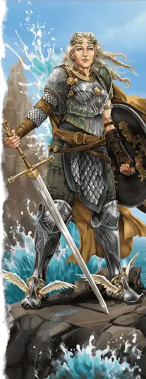

Астерия
Asteria
Средний Гуманоид (Человек, Паладин), хаотично-добрый, именной НИП

Класс Доспеха 18 (кираса, щит)
Хиты 195 (26к8 + 78)
Скорость 30 футов, летая 30 футов (крылатые сапоги)
| мод | спас | ||
|---|---|---|---|
| СИЛ | 12 | +1 | +1 |
| ЛОВ | 21 | +5 | +11 |
| ТЕЛ | 17 | +3 | +9 |
| мод | спас | ||
|---|---|---|---|
| ИНТ | 15 | +2 | +2 |
| МДР | 11 | +0 | +6 |
| ХАР | 20 | +5 | +11 |
Навыки Акробатика +11, Восприятие +12, Выживание +6, Запугивание +8, Магия +14, Убеждение +11
Иммунитет к урону яд
Иммунитет к состояниям испуг, истощение, отравление, очарование
Чувства пассивное Восприятие 22
Языки Общий, Друидический
Опасность 18 (20000 опыта)
Бонус мастерства +6
Особенности
Легендарное сопротивление (3/день). Если Астерия провалит спасбросок, она может вместо этого сделать спасбросок успешным.
Аура стража. Всякий раз, когда существо по выбору Астерии в пределах 30 футов от неё совершает спасбросок, Астерия может дать существу преимущество на спасбросок (никаких действий не требуется). Эта особенность не действует, если Астерия недееспособна.
Особое снаряжение. Астерия носит крылатые сапоги [winged boots], дающие ей скорость полета (включена в её статистику). Она также владеет одним камнем послания [sending Stone]; второй находится у Эвриалы [euryale].
Действия
Мультиатака. Астерия совершает две атаки Сияющим клинком и использует Взрывную молитву.
Сияющий клинок. . Рукопашная атака оружием: +11 к попаданию, досягаемость 5 фт., одна цель. Попадание: 9 (1к8+5) рубящего урона плюс 13 (3к8) урона излучением.
Взрывная молитва. Астерия вызывает взрыв магической энергии, окутывающий одно существо, которое она может видеть в пределах 60 футов. Цель должна совершить спасбросок Ловкости Сл 19, получая 40 (9к8) урона силовым полем при провале или половину этого урона при успехе. Астерия или другое существо, которое она может видеть в пределах 60 футов, восстанавливает 10 хитов.
Использование заклинаний. Астерия накладывает одно из следующих заклинаний, не требующее компонентов заклинания и использующее Харизму в качестве базовой характеристики (Сл спасброска от заклинания 19):
• Неограниченно: указание [guidance], свет [light], чудотворство [thaumaturgy];
• 2/день каждое: благословение [bless], свобода перемещения [freedom of movement], высшее восстановление [greater restoration], уход в иной мир [plane shift] (только на себя), защита от зла и добра [protection from evil and good], возрождение [revivify];
Бонусные действия
Укрепление защиты (перезарядка 4-6). Астерия вызывает спектральную версию своего щита, который вращается по орбите и защищает одно существо по выбору Астерии, которое она может видеть в пределах 60 футов. Спектральный щит действует до начала следующего хода Астерии. Пока щит вращается вокруг существа, оно считается в укрытии наполовину, невосприимчиво к состоянию испуганный и с преимуществом совершает броски атаки оружием.
Легендарные действия
Астерия может совершить 3 легендарных действия, выбирая из представленных ниже вариантов. За один раз можно использовать только одно легендарное действие, и только в конце хода другого существа. Астерия восстанавливает использованные легендарные действия в начале своего хода.
Бесцеремонный удар. Астерия совершает одну атаку Сияющим клинком.
Стремительный бег. Астерия перемещается на свою скорость. Это перемещение не провоцирует атак.
Накладывание заклинания (стоит 2 действия). Астерия использует Использование заклинаний.
Описание
Хотя теперь она путешествует одна, Астерия по-прежнему черпает большую часть своей силы из связи с Эвриалой. Астерия - прежде всего защитник и воин, путешествующая по мультивселенной, чтобы искоренять несправедливость, защищать невинных и вселять надежду. Она считает, что каждый заслуживает шанса написать свою собственную историю на своих собственных условиях, и её поступки уже вдохновили бесчисленное множество героических историй.
Даже спустя столько лет Астерия сохраняет радостную тягу к путешествиям и страсть к открытиям. Её с такой же вероятностью можно застать лазающей по деревьям или корпящей над тайными текстами, как и размахивающей мечом в бою. Любой, кто заводит с Астерией разговор о ее интересах, находит ее кладезем информации. Но она также сохраняет свою упрямую жилку и быстро отвергает любого, кто пытается ей приказывать.
Астерия не постарела с тех пор, как Истус нарисовал её будущее на первой колоде многих вещей [deck of many things]. Она не знает, почему это так, но предполагает, что ее жизнь связана с этой колодой; пока она продолжает существовать, будет существовать и она. У нее нет возможности доказать эту гипотезу, но, тем не менее, она выступает против таких групп, как Зловещие разорители, стремящиеся уничтожить колоду многих вещей.